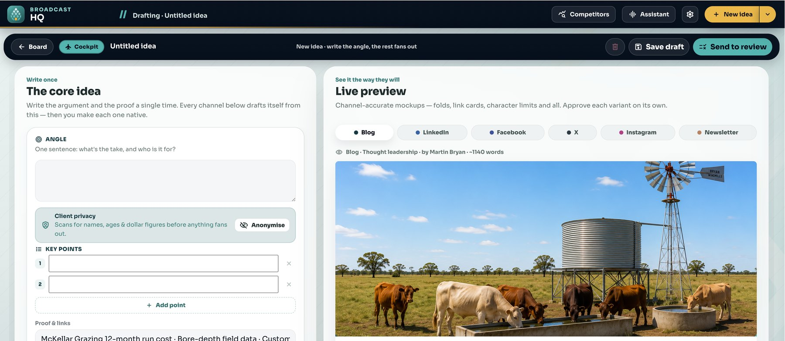
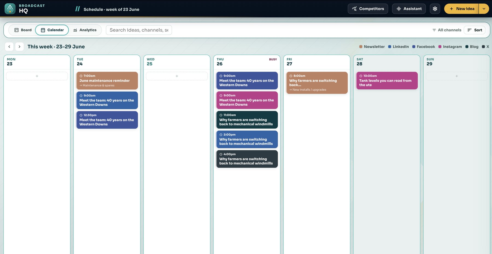

VOICE
Sound like your firm.
Use agreed tone, preferred language and approved examples to shape the draft.
BROADCAST HQ / GROW YOUR PRESENCE
Your next campaign is already hiding in the work your team does.
Capture it by voice, file, link or text. Broadcast HQ uses AI to help shape the campaign, apply your brand rules and prepare content for your team to approve.
Part of the Bunya operating system. Built on Microsoft. Human approved.

01 / CAPTURE & SHAPE
A client question. A useful explanation. A service you want people to understand. Start with the source material and the business goal, then shape a campaign around it.
Talk it through, upload a file, paste a draft or share a link.
Set the goal, audience, timing and context for the campaign.
Draft content for the channels your organisation has configured.
Edit the angle, wording and media before approving the work.

The supplied screens show an example business campaign. Your build uses your firm’s brand, approved source material and channel configuration.
02 / BRAND CONTEXT & HUMAN JUDGEMENT
Make the firm’s voice, guardrails and review criteria part of the workflow. Give reviewers the context to assess the work before it goes out.
VOICE
Use agreed tone, preferred language and approved examples to shape the draft.
GUARDRAILS
Apply configured rules and review criteria to support the person assessing the content.
APPROVAL
Edit, regenerate or approve deliberately. AI prepares content; authorised people decide what leaves.
Configured checks support review; they do not replace professional judgement or establish compliance.
03 / SCHEDULE & PUBLISH
Move approved content into a visible publishing rhythm. Keep the date, channel and connected publishing presence attached to the post.
Plan the next release.
See upcoming work and choose the right slot.
Keep the history.
Bring draft, scheduled and published work into view.
Use the right account.
Publish through the supported presence configured for your team.

04 / RESPOND & LEARN
Keep supported messages, comments and performance signals in the same operating rhythm. Use the response to decide what deserves attention next.
CONNECTED ENGAGEMENT
Review connected conversations, prepare a reply and send through the right presence. Assign an owner, log an enquiry or mark the item handled.
PERFORMANCE INTO DIRECTION
See available publishing, engagement and enquiry signals. Use what earned attention to shape the next campaign test.
Publishing, inbox and analytics functions depend on supported platform APIs, account permissions and configuration.
05 / PART OF THE BUNYA OPERATING SYSTEM
Broadcast HQ brings the campaign workflow into Bunya alongside Command Centre and Bunya Voice. Your Blueprint defines how the products and context connect for your firm.
Power Platform and Dataverse organise content operations, with approved brand context and SharePoint assets supporting production.
Define channels, publishing accounts, brand rules, reviewers and permissions before the build.
Explore how practice operations and conversations fit alongside marketing in the wider system.
See the whole system ↗Grow is a separate service for brand, website and marketing setup. Discuss it if your firm needs help putting the foundations in place.
Explore Grow ↗Your Blueprint confirms supported channels, account access, review rules, integrations, licensing and costs. Paid-media management, full-funnel attribution and advanced multi-identity workflows may require a separately scoped phase.
SEE THE WORKFLOW
We’ll show you how Broadcast HQ can turn it into a campaign your team can review, schedule and learn from.